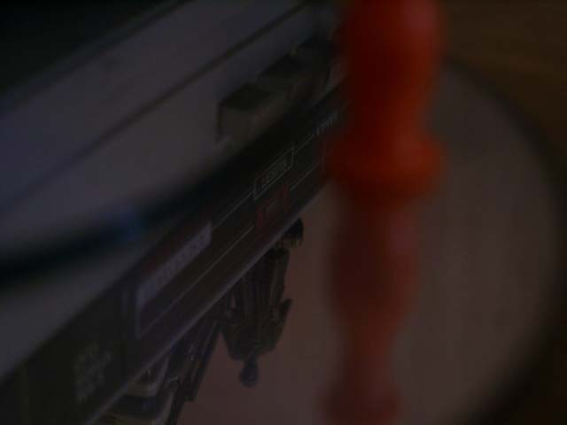
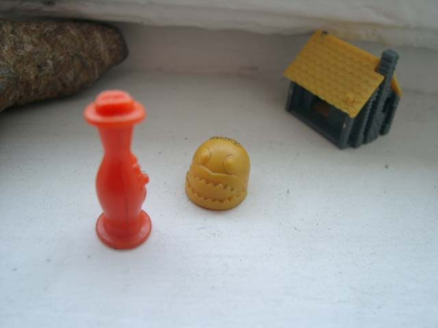
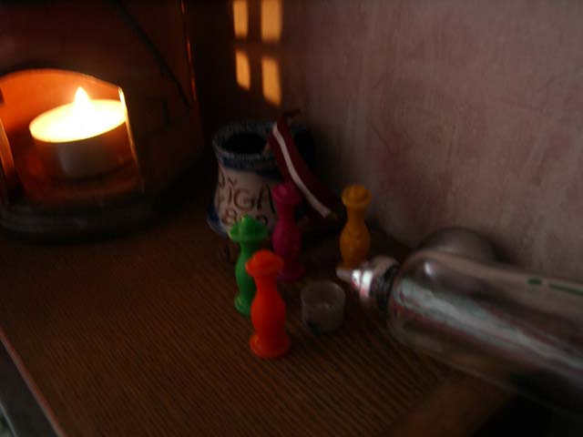

Похождения бравой игрушки Боззо
продолжение (начало)
Когда Боззо, без чувств врезался в скалу его подобрал старый мудрец Хима
Он вылечил раны маленького оранжевого странника
Зашил его одежды, и обкурил горными травами его сонный разум
Боззо проснулся хорошо отдохнувшим
Его состояние духа было настолько велеколепнам, что он даже не удивился
где он находится
Мудрец Хима накормил его распросил куда и с какой целью странник путь держит
И Боззо рассказал ему про братьев и про бабушку.
А также рассказал всю свою историю и про мелких человечков и про наркоманов
и про генерала.
- Да, - задумчиво сказал мудрец - генерал это очень мудро сказал
СИЛА В ТЕБЕ!
Это у него хорошо так сказать получилось! Был бы я помоложе я бы спустился со шкафов
только для того чтобы познакомится с этим генералом. Видимо он мудрый человек
А ты ступай молодой человек. выполни свою цель

- И помни! - прошептал ему голос мудреца напрощание
Человеку и игрушкам в жизни всегда нужна цель!
Только стремление к достижению цели помогает развивать в себе
физические и духовные качества.
Правильно поставленная цель, когда она длагородна, как в твоём случае
это и есть смысл всей жизни... Цель это главное!
Вдохновлённый словами мудреца, Боззо очень скоро нашёл свою бабушку
- Бабушка здраствуй! - обрадовался Боззо
- Здраствуй засранец, опять небось за пивом пришёл?
- Да бабушка, братья мои без пива погибают. И послали меня они цель свою выполнить

- Вот что я тебе скажу маленький засранец - сын большого засранца
Я не понимаю чего ты там про цель какую-то говоришь, но пива у меня нету
НЕТУ ПИВА!
Ступай домой, и скажи отцу чтобы он пришёл дров наколоть
Вернулся Боззо домой и говорит отцу, так мол и так, нету у бабушки пива
А отец ему:
- Забей! Мы с братьями твоими одеколон нашли, присаживайся, посидим...

И рассказывал Боззо про свои похождения
Рассказывал про страшных наркоманов, и доблестную полицию
Про черных и крылатых придурков и про горы травы
Боззо рассказал братьям что есть очень умная мысль:
"Сила в тебе!"
А есть еще мысль, которую он сначала считал умной, а она оказалась неумной:
"Цель это главное!"
...
начало